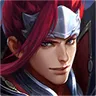
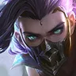

Agudo
Jungle / Farm · Marksman
Tier CCara Melawan Agudo
Abis pakai skill 3, Agudo tipis banget. Pilih momen buat fokus bunuh dia sebelum dia heal tim dan kasih buff.
Counter Alami Agudo
Pet Agudo jadi target gratis buat numpuk basic attack Lam yang di-enhance (3–4 kali beruntun). Makin banyak target, makin gede damage dan heal skill 2. Abis ult Agudo, Lam bisa dive ke badannya.

Batalin channel Release dan lompat ke badannya pas lagi kepisah dari pet.

Deketin pakai stealth buat batalin Release, terus burst badannya yang HP-nya rendah sebelum pet balik.
Jangkauan super jauh Meng Ya mengalahkan Agudo yang harus mendekat dengan pet-nya — poke dari jauh dan jangan adu saat dia lagi mode semangat.
Agudo tipis banget setelah memakai skill 3 — skill Luban yang bisa dihindari dari jauh tetap mengancamnya, dan meriam hiu ult-nya mengeksekusi HP rendah.
Rekomendasi Item Lawan Agudo
Agudo heal timnya dan memberi buff lewat skill 3 — anti-heal memotong pemulihannya, lalu fokus bunuh dia saat tipis setelah ult.
Jangan Pick Melawan Agudo
Pet ngalangin hook dan maksa hook-nya kena summon.
Agudo menyerang dengan pet dan basic attack beruntun — dia bisa menekan Liu Bang di lane dan memaksanya bertahan, sehingga teleport bantuannya terlambat.
Pet Agudo memberi target tambahan yang mengacaukan dive Nakoruru — Agudo bisa menyerang dari jauh sementara Nakoruru sibuk dengan pet.
Sakeer cuma punya satu hard CC lewat Mulberry Power dan ngandelin semak plus heal kunang-kunang buat bertahan — Agudo bisa nerobos itu semua: roll-nya kebal satu hard CC, ultinya menghapus semua CC dan melepas Furball yang bertarung sendiri sambil nge-stun, jadi Sakeer susah kabur atau nge-heal dengan tenang saat Agudo nempel.